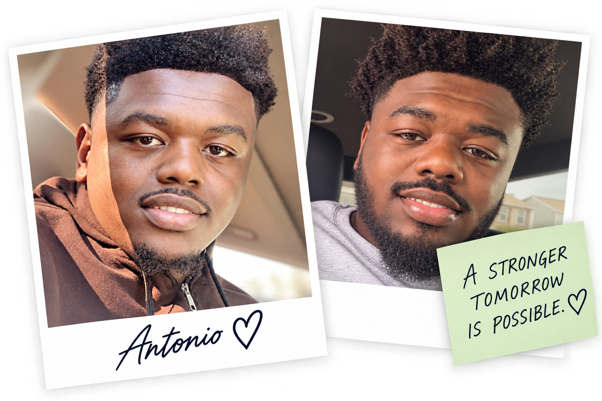

Antonio's Story
More Than a Patient.
He's My Son.
As Antonio's mom, I have spent years watching my son fight kidney failure. He has gone through dialysis, surgeries, hospital stays, procedures, appointments, setbacks, and more than any young person should have to endure.
Right now, Antonio is back in the hospital dealing with more complications. Every hospital stay is another reminder of how important it is for us to keep searching and keep sharing his story.
My hope is simple: I want my son healthy. I want him to have the opportunity to live his life without dialysis and constant hospital stays. I want him to have the future that every mother wants for her child.
Read My Full Letter